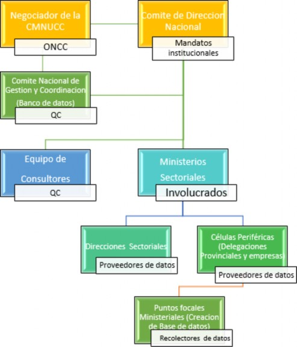
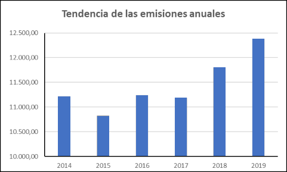

Republic of Equatorial Guinea
MINISTRY OF AGRICULTURE, LIVESTOCK, FORESTS AND THE ENVIRONMENT
Malabo, June 2022
ANDEGE: Friends of Nature and Development of Equatorial Guinea
CARPE: Environmental Program of the Central African Region
CC: Climate Change
CH4: Methane
UNFCCC: United Nations Framework Convention on Climate Change
CDN: Nationally Determined Contributions
CPDN: Intended Nationally Determined Contributions
CO: carbon monoxide
CO2eq: Carbon dioxide equivalent
CO2: Carbon Dioxide
COMIFAC: Central African Forest Commission
COP: Conference of the Parties to the UNFCCC
COVID19: Coronavirus 2019
FAO: Food and Agriculture Organization of the United Nations
GHG: Greenhouse Gases
Gg: Gigagrams
INCOMA: National Institute for Environmental Conservation
INDEFOR-AP: National Institute of Forestry Development and Management of Protected Areas
INEGE: National Institute of Statistics of Equatorial Guinea
INGEI: National Inventory of Greenhouse Gases
IPCC: Intergovernmental Panel on Climate Change
MAGBMA: Ministry of Agriculture, Livestock, Forests and the Environment
NAMA: Nationally Appropriate Mitigation Action (NAMA)
N2O: Nitrous oxide
SDG: Sustainable Development Goals
NGO: Non-Governmental Organization
PANDER: National Action Plan for the Development of Renewable Energies
PCNGE: First National Communication of Equatorial Guinea
GDP: Gross Domestic Product
PNAF: National Forestry Action Plan
PNCC: National Climate Change Program
PNDES: National Economic and Social Development Plan
PNI-REDD+: National Investment Plan for the Reduction of Emissions from Degradation and Deforestation, forest management, forest conservation and carbon stock
UNDP: United Nations Development Programme
PPFVC: Country Program of the Green Climate Fund
REDD +: Reduction of Emissions from Degradation and Deforestation, forest management, forest conservation and carbon stock.
TCO2: Tons of Carbon Dioxide
IUCN: International Union for Conservation of Nature
UNGE: National University of Equatorial Guinea
LULUCF: Land use, land use change and forestry
In 2015, the Republic of Equatorial Guinea prepared and submitted to the United Nations Framework Convention on Climate Change (UNFCCC), its First Nationally Determined Contribution (NDC). In 2018, it ratified the Paris agreement; whose main objective is to keep the increase in global average temperature below 2°C with respect to pre-industrial levels and to continue efforts to limit this temperature increase to 1.5°C.
At COP25, which took place in Madrid, it agreed that the states parties urgently increase the ambition of their NDCs and sectors.
Within this perspective, Equatorial Guinea has carried out this Update of its CDNs since 2019, being able to paralyze the process due to the COVID19 pandemic; resuming the process in 2021 with 9 consultancies and validation meetings.
The result of the INGEI, prepared from April 2021 to March 2021, was a progressive increase in GHG emissions. Bearing in mind that Equatorial Guinea's ambition in the first CDN was to reduce emissions by 20% by the year 2030, with the goal of reaching 50% by 2050, with reference to the year 2010. Equatorial Guinea's ambition in its updated CDN has been increased and has the objective of reducing emissions by 35% by the year 2030, with the goal of reaching 50% by 2050, with a total reduction of 379,291.54 Gg CO2eq, with reference to the year 2019 (446,215.38 Gg CO2eq). The next update will be in the year 2027.
To reduce these emissions, a series of adaptive activities, mitigation and transversal activities have been selected, which are aligned with the Sustainable Development Goals (SDG), as well as territorial Priority Themes of the country and the fight against Climate Change, their sectors and departments involved; the estimation of the amounts required per action and possible sources of financing.
One of the demands of the nineteenth Conference of the Parties (CoP-19) of the United Nations Framework Convention on Climate Change (UNFCCC), held in the city of Warsaw (Poland) in 2013, was to invite the country Parties to make efforts to initiate and intensify preparations for the preparation of the so-called Intended and Determined Contributions at the National Level (CPDN or NDCs in English), with the sole purpose of achieving a global commitment that tends to reduce to the maximum of Greenhouse Gas (GHG) emissions, in a binding global agreement.
COP17, held in Durban (South Africa) proposed to approve a Binding Agreement at COP21 in Paris, which was the priority issue of COP20, held in Lima (Peru), in December 2014, adopting decision 1/COP20.
The achievements obtained during COP 20 also include: i) strengthening the invitation and the definition of the deadline for each of the Parties to communicate to the UNFCCC secretariat their planned and determined contributions at the national level (known as INDCs, for its acronym in English and later became the first NDC at the time of ratification of the Paris Agreement); ii) the invitation to Parties to consider including adaptation initiatives or components in their NDCs; iii) the incentive for each country to be more ambitious in formulating its national contributions; and, iv) the request to the UNFCCC secretariat to prepare, no later than November 1, 2015, a synthesis report containing the aggregate effect of the NDCs that have been submitted by the Parties up to October 1. of 2015. To guarantee the applicability of the above, most of the countries Parties to the Convention are willing to participate in the common fight against climate change. For this reason, the Republic of Equatorial Guinea, as a Party to the Convention, had to prepare and submit its first National Contribution; At that time, it reflected the reality of the country and justifies the political will of the Government to fight against the effects of climate change.
Subsequently, during COP 21 and based on the actions and negotiations carried out within the framework of the Lima-Paris Agenda, 195 nations unanimously approved an unprecedented global agreement to combat climate change and promote measures and investments for a low carbon, resilient and sustainable future, the so-called Paris Agreement. The objectives of the Agreement are to keep the global average temperature increase below 2°C above pre-industrial levels and to continue efforts to limit that temperature increase to 1.5°C. Additionally, the Agreement proposes increasing the capacity to adapt to the adverse effects of climate change and promoting climate resilience and development with low GHG emissions, as well as situating financial flows at a level compatible with a trajectory that leads to development under these characteristics.
COP21 held in 2015 has been key in the negotiations and high expectations for the future of Mother Earth, adopting the Paris Agreement on Global Climate Change. Since then, as an indicator of the political support of the parties, an initiative has been taken to implement the CRCs, prioritizing their scope, definition, obligation, as well as their transparency.
The Paris Agreement states that all Parties must make and communicate ambitious efforts related to their Nationally Determined Contributions (NDCs), which constitute the global response to climate change. In addition, it indicates that Parties aim to peak global GHG emissions as soon as possible, taking into account that developing countries will take longer to peak, and that GHG emissions thereafter should reduced rapidly, in accordance with the best available scientific information on the basis of equity and in the context of sustainable development and efforts to eradicate poverty. Thus, each of the Parties must increase the ambition of their national contributions in the successive communications to the Convention, in periods of five years, taking into account their common but differentiated responsibilities and their respective capacities, in light of the different circumstances. national.
On July 16, 2018, the Republic of Equatorial Guinea ratified the Paris agreement.
COP25 took place in Madrid between December 2 and 15 with absolute normality and ended with the adoption of an agreement with the following clauses:
Multilateralism and science prevailed at COP25, and the agreement claims that scientific knowledge is the main axis that should guide decisions in the face of climate change and the increase in the ambition of countries and sectors.
The agreement calls for an increase in the ambition of commitments to fight climate change in 2020, following the calendar set out in the Paris Agreement and expresses the "urgent need" for these new commitments by countries to bridge the gap existing in the current ones, with respect to the Paris objective of avoiding a temperature increase of more than 1.5 degrees.
Commits to work and deepen the responses to the irreversible damage caused by climate change in the most vulnerable countries within the framework of the Loss and Damage Mechanism
Agrees on a new Gender Plan to respond to the unequal effect of climate change on women and girls
The countries are summoned to work on the design of market mechanisms at the next COP that avoid double counting, that serve the ambition of the Paris Agreement and that guarantee the environmental integrity of the system
Finally, COP25 gives impetus and recognition to the action of non-governmental actors from all sectors. The COPs are no longer just a forum for setting rules. In this sense, the final Decision recognizes the importance of non-governmental actors in climate action, invites them to increase their action in the fight against climate change and to generalize climate compatible strategies.
Within these realities, the Republic of Equatorial Guinea has updated its Nationally Determined Contributions to present its new ambition to the UNFCCC.
Through the update of the CRC, Equatorial Guinea reaffirms its commitment to the fight against climate change which requires, today as never before, the action of all countries. Our world is facing a far-reaching civilizational crisis with different facets: the adverse effects of climate change that manifest themselves in ecosystem imbalances exacerbated by an economic growth model that has not considered the limits of the environment and the planetary capacity of the systems that sustain life; a loss of bioculturalism and the richness of traditions that characterize our societies, where poverty is a lacerating manifestation of an exclusive and predatory growth model; as well as a health crisis which reminds us that the degradation of ecosystems caused by the excessive use of wildlife and health problems are intrinsically linked, and that these can compromise the social and economic well-being of our common home.
The Government of the Republic of Equatorial Guinea has adopted the United Nations 2030 Agenda and its 17 Sustainable Development Goals (SDGs) and the African Union Agenda 2063. Internalizing all this in the new National Plan for Economic and Social Development towards horizon 2035 (PNDES), prepared in 2019, in which 4 thematic blocks of national priority were established: Block 1, is the Eradication of Poverty, which focuses its analysis on the specific SDGs: SDG1, SDG2, SDG3, SDG4, SDG6, SDG8 and SDG17; Block 2 is Social Inclusion and Sustainable Peace, which focuses its analysis on the specific SDGs: SDG5, SDG10, SDG16, SDG17; Block 3, which is Productivity and Industrialization, which focuses its analysis on the specific ODS: ODS8, ODS9 and ODS17 and, Block 4, Environmental Sustainability, which focuses on the specific ODS: ODS7, ODS11, ODS12, SDG13, SDG14, SDG15 and SDG17.
After this review of PNDS 2035, the COVID19 pandemic arrived in 2020, forcing nations to rethink their development models. In this context, the update of our CND in the framework of the Paris Agreement establishes the bases to move towards a responsible and sustainable recovery. The Government of Equatorial Guinea recognizes the close link between the protection of the environment and the well-being of the population as a necessary condition to access other dimensions of well-being such as health, food security and employment.
During COVID-19, the project to update the CDN and the INGEI (2014-2021) began, but progress was not made in 2020 due to the lack of data collection and institutional arrangements. As COVID-19 was reduced, the necessary data for the update were obtained.
Due to their nature, the contributions planned and determined at the national level in the Republic of Equatorial Guinea are articulated in two main thematic axes:
Adaptation to climate change, as a vulnerable country; including:
Integrating climate change and climate variability issues into policies and planning processes at the national, regional and local levels;
Implementation of risk reduction strategies and adaptation measures in pilot sites;
Strengthen technical capacity to integrate climate risks into coastal zone management, and
Disseminate lessons learned to key stakeholders
The attenuation of Greenhouse Gas (GHG) emissions into the atmosphere, taking into account the sectors most influential in the national climate impact:
Energy Sector
Industrial processes and product use sector
Agriculture, Forestry and Land Use Change Sector
Waste Sector
For this, it is essential to guarantee both national and international financing, in order to meet the identified needs.
The objective of the Contribution is to establish the mechanisms for the reduction of Greenhouse Gas (GHG) emissions in the long term; situate the progression of the countries in the fight against climate change in the period 2030-2050 in coherence with the post-2050 trajectory, with the purpose of containing the increase in Global Warming below 2ºC in relation to the pre-industrial period.
Previously, the idea of developing institutional arrangements was not raised, in fact, in the INGEI carried out in 2013, few data could be collected at the national level, but a large part of the data was collected from sources of international organizations, which is why which, at present, the lack of existence of sectoral databases, the physical data files that are disordered, divided and with different results, the lack of accreditation and sectoral focal points, the lack of a regulation and/or strategy of data collection.
The current data collection campaign for the INGEI 2021, was carried out with the prioritization of the institutional arrangement prepared by the MAGBMA in 2019, for this, focal points were designated in departments of sectors involved, who attended the training carried out for him
MAGBMA on August 27, 2021 on the requirements for collecting data and how to keep it.
All those surveyed consider that the current data collection scheme for the INGEI is not giving the expected results because coordination is being more at the level of papers than in reality and the different sectoral ministries continue to function in a different way. parallel, highlighting that the institutional collaboration agreement drawn up by the MAGBMA in 2019 only three ministries (Interior and Local Corporations, Health and Social Welfare, and Fisheries and Water Resources) reacted positively by nominating their focal points.
The current system of institutional arrangements has sufficient human resources, but requires both logistical and economic support to effectively carry out its mission.
The Contribution of the Republic of Equatorial Guinea has been prepared under the supervision of the Ministry of Agriculture, Livestock, Forests and the Environment, through the General Directorate of the Environment with the collaboration of the Group of Experts of the National Coordination of Climate Changes and UNDP International Technical Assistance.
The data collected in the documentation are of national origin and from international databases (FAO and IPCC), with a participatory approach of key actors.

Figure 1.- Operation of the institutional arrangement
In the process of updating the CDN, we have worked with different key actors: 1) institutional actors in the collection of activity data for the update of INGEI 2021, 2) sectoral consulting actors, 3) actors in the validation of The consultants' reports involved those from the public sector, the private sector, civil society and international institutions.
The actors with activity data are: Ministry of Industry and Energy, Ministry of Civil Aviation, Ministry of Mines and Hydrocarbons, Ministry of Posts, Transport and Telecommunications, Ministry of Agriculture, Livestock, Forests and Environment, Ministry of Works Public, Housing and Urbanism and Ministry of the Interior and Local Corporations.
In the 9 workshops to validate the consultants' reports, the gender approach in participation was taken into account.
Taking into account the principles of access to information and public participation, there was also a participation and communications strategy for socializing and raising public awareness about climate change management in the country and updating the NDC through from a consultancy. To facilitate the effective participation of citizens, the communication pieces were designed based on a segmentation of actors that made it possible to maintain a multicultural and gender approach as much as possible, and to adapt the messages to the level of knowledge and the needs of information on the target audiences.
During the development of this update, an institutional diagnosis was carried out with the purpose of identifying deficiencies or problems in the existing institutional arrangements and proposing viable and feasible solutions. For this, the research technique focused on the review of work carried out, interviews with the leaders of entities in charge of climate change issues at the national level and including heads of sectorial departments prioritized in the INGEI carried out in 2013 and in accordance with the provisions in articles 4 and 12 of the UNFCCC, which say:
Art.4: All Parties, taking into account their common but differentiated responsibilities and the specific nature of their national and regional development priorities, objectives and circumstances, should: a) Prepare, periodically update, publish and provide to the Conference of the Parties, in accordance with Article 12, national inventories of anthropogenic emissions by sources and removals by sinks of all greenhouse gases not -6- controlled by the Montreal Protocol, using comparable methodologies to be agreed by the Conference of the Parties.
Art. 12: Each Party shall transmit to the Conference of the Parties, through the secretariat, the following items of information: a) A national inventory, to the extent its capabilities permit, of anthropogenic emissions from sources and removal by sinks of all greenhouse gases not controlled by the Montreal Protocol, using comparable methodologies to be promoted and endorsed by the Conference of the Parties; b) A general description of the measures it has taken or intends to take to implement the Convention; and c) Any other information that the Party considers relevant to the achievement of the objective of the Convention and suitable for inclusion in its communication, including, if feasible, data relevant to the calculation of global emission trends.
Equatorial Guinea has a surface area of 28,051 km² and is divided into two important regions: the Continental (26,000 km²) and the Insular (2,017 km²). Some Bays and Capes stand out, as is the case of Luba Bay, Cabo San Juan and Annobón (located in the southern hemisphere), as well as the islets of Corisco, Elobey Grande, Elobey Chico and Mbañé located in the northern hemisphere.
Legend: RC = Continental Region and RI= Island Region
Figure 2.- Map of Equatorial Guinea.
The country is bordered to the north by Cameroon, to the east and south by Gabon, and to the west by the Atlantic Ocean. Equatorial Guinea is well endowed with arable land and mineral resources ranging from gold, oil, uranium, diamond and columbite-tantalite. The country also has an Exclusive Economic Zone (marine surface) of 314,000 km², 11 times larger than the surface of the mainland, with 600 km of maritime coastline.
The population of Equatorial Guinea is 1,225,377 inhabitants (INEGE, 2015 Census), and presents a young structure characterized by a high number of children and a small number of elderly people (Ministry of Planning and Economic Development, 2002). According to the master plan "Equatorial Guinea Horizon 2020" (2007), 76.8% of the population is below the poverty line, which increases their vulnerability to the ability to respond to the crisis
increase in temperature, specifically due to drought and increased rainfall that brings with it floods. The economy rests to a large extent on the extraction of oil and liquefied gas, as well as the export of wood, cocoa and coffee.
The climate of Equatorial Guinea is of the “tropical rain forest” type with features of “tropical savannah” in its easternmost extreme. The average annual temperature is around 25ºC. The rains are abundant and regular and usually exceed 1,500 - 2,000 mm per year.
The main resources of the country are Agriculture, of a traditional and itinerant nature, which has prospered during the colonial era (cocoa, coffee, palm oil, coconut). This agriculture has known the same regression as forest exploitation, but it has never recovered. Only 8% of the country's surface has been dedicated to agriculture. Currently there are many projects to promote agriculture, such as model farms (pilot or experimental farms), which contribute to the emission into the atmosphere of Greenhouse Gases (GHG). Any extreme variability will bring a profound change in agriculture because it is small-scale.
Wood experienced a sharp decline after independence (1968), and then grew in the 1990s. The economy of Equatorial Guinea has rested in couple of previous decades on wood, right now it rests on oil.
According to the FAO, the rate of deforestation grows considerably from 58.2 km2 /year in 1990 to 150 km2 /year in the period 1990-2005, under the action of agricultural forests and very intensive logging. These figures correspond to a deforestation rate of 0.9% (FAO, 2005, in Obiang, 2014).
The latest FAO Global Forest Resources Assessment 2010 (FRA) estimates that between 1990 and 2010 Equatorial Guinea has lost 12.6% of its total forest cover, which corresponds to an annual deforestation rate of 0.65%. While the GHG inventory study in the forestry sector carried out by Obiang (2014), has estimated a deforestation rate of 0.8%, which corresponds to 9.4 Gg of CO2 emissions, which effectively contribute to the greenhouse effect and therefore consequent to the climatic variability of the country and the world.
Oil production (barrels/year) in Equatorial Guinea began between 1992-1994 and reached its maximum peak in 2008, and is currently showing a drop. The burning of the gas produced in the oil plants increased every time oil production increased, and consequently an increase in GHG in the atmosphere, thus contributing to the local and global greenhouse effect.
Oil and gas have increased GDP spectacularly and without precedent, which was 83 thousand CFA in 1995 at the beginning of oil exploitation until it rose to 5,130 thousand CFA in 2007 (7.8 thousands of euros). More than 90% of the national GDP comes from oil resources. In 1994, the GDP per inhabitant was 201 dollars per inhabitant, while in 2008 the GDP reached 7,400 dollars per inhabitant (CEMAC, 2008). This increase in GDP helps the country to carry out large civil infrastructures, which contribute to deforestation and consequently to the emission of GHG into the atmosphere.
In relation to biological diversity (fauna and flora), although exhaustive studies have not been carried out on what concerns the fauna of Equatorial Guinea, some studies carried out ensure a great diversity of animal and plant species (Senterre 1999 and 2005). In Bioko it is estimated that there are some 2000 species of plants of which more than 40 are endemic. The small ornithological studies carried out also ensure a great diversity of birds. Bioko Island also has about 65 species of mammals, of which 10 are primate species and among them seven subspecies of monkeys are endemic. The seven subspecies of monkeys are threatened by hunting by the island's inhabitants for the consumption of animal protein.
In the Continental Region, as in Bioko Island, there is a great diversity of mammals such as elephants (Loxondonta africana), gorillas (Gorilla gorilla) , chimpanzees (Pan troglodytes), baboons (Mandrillus sphinx), panthers (Panthera pardus) and numerous species of antelopes, amphibians, reptiles and birds . The hunting of these species is appreciated and consequently a very serious threat. Additionally, the evidence of the significant increase in temperature and the change in precipitation in the locations under study, would lead to this diversity being increasingly in danger of extinction
Among the 55 National Legal Frameworks analyzed, it has been found that all are obsolete in relation to GHG, that is, they do not include articles or definitions on GHG Emissions, with the exception of PANDER, PNI-REDD+ and the Mitigation Plan for Civil Aviation.
Although the other legal frameworks have general aspects of Environmental Conservation that can contribute to the reduction of GHG emissions, 45 of them lack Application Regulations.
In the framework of the update of the CDN, it is sought that the projects to be financed are aligned with the priorities and strategies of the National Policies that contribute to the mitigation of Climate Change, which seek to guide public and private decisions towards development pathways that are climate resilient and low in carbon, and at the same time seek priorities and strategies that are focused on meeting national goals within the framework of the Paris Agreement with the NDCs. As a fundamental axis is the adoption of a territorial vision articulated to sectoral initiatives that allow a comprehensive management of Climate Change, as proposed by the different strategies that the Policy articulates, which are listed below:
National Forestry Action Program (PNAF), adopted in the year 2000.
Strategy and Action Plan for the Conservation of Biodiversity in Equatorial Guinea (ENPADIB), adopted in 2005.
Implementation Program of the "National Medium-Term Investment Plan in Agriculture and Rural Development" (PNIMP), adopted in 2005.
National Program for Food Safety (PNSA), adopted in 2012.
National Adaptation Action Plan (PANA), the country prepared said document in 2013.
Mainstreaming Strategy for Sustainable Soil and Forest Management (ETGSSB), prepared in 2013.
National Action Program to Fight Deforestation and Land Degradation in Equatorial Guinea (PAN/LCD), the country has prepared and adopted said strategy in 2015.
Action Plan of the Republic of Equatorial Guinea for the Mitigation of CO2 Emissions (PAMEGE) from International Aviation, prepared and adopted in 2016. Horizon 2035.
National REDD+ Strategy (EN-REDD+), adopted in 2018.
Action Plan for the development of Renewable Energies in Equatorial Guinea 2018 – 2025 (PAER), this plan was adopted in 2018.
National REDD+ Investment Plan (PNI-REDD+), adopted in 2019.
Reference Level of Forest Emissions, in 2019.
Country Program of the Green Climate Fund (PPFVC) in 2019.
Likewise, it is considered relevant to align all these Plans with the National Economic and Social Development Plan (PNDES), by 2035.
At the Central African Regional level, there is the Economic Community of Central African States (CEEAC) and the Central African Forest Commission (COMIFAC). The most relevant action plans in the context of climate change are:
The Economic Community of Central African States (CEEAC) has an Catastrophic Risk Reduction Action Plan (PARRC) 2015-2030 , which is inserted within its general policy on the environment and management of natural resources, specifically in its axes: (Axis 1) Fight against land degradation, drought and desertification; (Axis 4) Conservation and sustainable management of forest resources in Central Africa; and (Axis 5) Fight against climate change in Central Africa.
At the Central African Forest Commission (COMIFAC), there is a second Convergence Plan (PC) 2015-2025 towards a green economy. The purpose of this institution is that all the signatory countries of the treaty carry out common actions at the national level, guided by the Convergence Plan. This Plan has six (6) axes of intervention themes and 3 transversal ones. The intervention axis number 4 "fight against the effects of climate change and desertification", has a series of results that are expected from the member states, which include: (1) Increased capacity in the face of the effects of climate change, (2) Forest follow-up and monitoring systems, (3) Mitigation strategies (REDD+, Climate Plan, NAMA), (4) Control of greenhouse gas emissions from deforestation and degradation from a reference level , (5) National action plans to combat desertification, and (6) Increase in reforested areas.
According to the PPFVC (2019), the relevant subsectors for emissions in the country are: Power Generation, 2) Forestry and change of uses, 3) Agriculture, 4) Transportation, 5) Waste, 6) Hydrocarbons , 7) Mining and 8) Use of energy in infrastructures.
The time series were harmonized as much as possible until the data series from 2014 to 2019 was achieved. The scope of the inventory was National.
The sectors inventoried according to the IPCC 2006 methodology were:
Energy
Industrial processes and product use
Agriculture, Forestry and Land Use Change
Gross emissions do not include GHG emissions and removals from “Land Use, Land Use Change, and Forestry” (LULUCF), for a total of 17,037, 47 Gg CO2 eq. (Table 1). CO2 has the largest contributions to emissions with 96.47%, CH4 3.07% and N2O only contributes 0.46%.
Table 1. Gross GHG emissions by sector in Gg CO2 eq. (Own elaboration)
|
Industry |
CO2 |
CH4 |
N2O |
TOTAL |
|
ENERGY |
10,370.19 |
26.48 |
30.45 |
10,427.12 |
|
INDUSTRIAL PROCESSES |
6,046.99 |
292.07 |
NA |
6,339.06 |
|
AGRICULTURE |
NA |
76.97 |
6.54 |
83.51 |
|
WASTE |
18.77 |
127.60 |
41,41 |
187.78 |
|
NATIONAL TOTAL |
16,435.95 |
523.11 |
78.40 |
17,037.47 |
Unlike gross emissions, in determining net emissions, GHG emissions and removals from the “Land use, land use change and forestry” sector are included. In Equatorial Guinea, the absorption of CO2 due to the growth of biomass in the forests exceeds the emissions produced in these due to the extraction of wood and other causes. The net absorptions of CO2eq in Equatorial Guinea resulted in a total of -256,831.76 Gg CO2 eq. (Table 2)
Table 2. Net GHG emissions by sector in Gg CO2 eq. (Own elaboration)
|
Industry |
CO2 Emissions |
CO2 Absorptions |
CH4 |
N2O |
|
ENERGY |
10,370.19 |
26.48 |
30.45 |
|
|
INDUSTRIAL PROCESSES |
6,046.99 |
292.07 |
NE |
|
|
AGRICULTURE AND LIVESTOCK |
NA |
76.97 |
6.54 |
|
|
FORESTRY AND LAND USE CHANGE |
51,317.40 |
-325,186.62 |
NA |
NA |
|
WASTE |
18.77 |
127.60 |
41,41 |
|
|
NATIONAL TOTAL |
67,753.35 |
-325,186.62 |
523.11 |
78.40 |
|
-257,433.27 |
||||
The change in temperature becomes increasingly acute both in the Insular and Continental Regions, as shown in the figure that presents the evolution from 1951 to 2008.

Figure 3.- Variation of the monthly values of surface temperature for the period 1951-2008. The red line represents a moving average of 12 points.
Source: Ministry of Fisheries and Environment, 2013. PANA. Figure nº12 on page 34.
Equatorial Guinea, lacking meteorological stations for the measurement and evaluation of climatic factors (agrometeorology, hydrometeorology, wind isobars, etc.), has limited knowledge about climate change and its effects. Based on the forecasts made (MPMA, PANA, 2013), it is exposed to greater variability in rainfall (drought in general, more showers and sunnier days), higher temperatures and an increase in sea level (along with more frequent storms and swells). The population is confirming changes in the behavior of the climate such as more frequent storms, floods, dry springs and generally higher temperatures (MPMA, PANA, 2013). All this justifies its high vulnerability.
According to data from the only two meteorological stations of ASECNA (Agency for the Safety of Air Navigation in Africa and Madagascar) in Equatorial Guinea, located in Malabo and Bata respectively. In Malabo, the temperature in all its modalities (maximum, minimum and average) shows very upward trends in a statistically significant way, a result contrary to the temperature in Bata. This significant increase is very noticeable in the minimum temperature. At the precipitation level, it presents a cumulative precipitation without statistically significant trends. But the number of days with rain shows progressively increasing trends. In Bata, precipitation shows slight upward trends, but not statistically significant, and a downward trend in the number of rainy days (Obiang, 2016).
A Mann-Kendall trend test was used to determine whether or not a trend exists in the time series data. It is a nonparametric test, which means that no underlying assumption is made about the normality of the data. The hypotheses for the test are the following:
H 0 (null hypothesis): There is no trend present in the data. HA (Alternate Hypothesis): There is a trend in the data. (This could be a positive or negative trend)
If the p-value of the test is less than some significance level (common choices are 0.10, 0.05, and 0.01), then there is statistically significant evidence that a trend is present in the time series data. (Obiang, 2016).

Figure 4. Graph of comparison of the trends of the Mann-Kendall statistical test for the average temperature in Malabo during 26 years (Extracted from OBIANG 2016).

Figure 5. Mann-Kendall trend graph for mean temperature in Bata (Extracted from OBIANG 2016)
The sectors most vulnerable to the effects of climate change are considered: agriculture, fishing, energy, housing, education, sanitation, drainage (floods), health, and the environment (heat and high rainfall). The losses derived from these damages, despite being very considerable, are currently difficult to quantify economically in the absence of statistical records.
The Republic of Equatorial Guinea is a developing country, whose economy depends exclusively on extractive industries and has to face a series of development challenges, such as: poverty, education, health, road infrastructure, etc. . Although, in terms of emissions, the Republic of Equatorial Guinea represents less than 0.1% of world emissions, however, the emission trend of some economic sectors is important without taking into account the absorption of forests, especially , Forestry 75.19%, energy 15.26%, industrial processes 9.28% and, finally, waste with 0.27%.
In 2019, the Government adopted the third National Plan for Economic and Social Development (PNDES) to Horizon 2035, which fits perfectly with the Sustainable Development Goals and the ambitions for the reduction of CO2 emissions since that is committed to the diversification of the economy, with a focus on the green economy (tourism, forestry, business, productivity, etc..).
Compared to all the years inventoried, an improvement is observed in data collection in the last years 2018 and 2019, which is close to the reality of current emissions, all due to data from the industrial sector and waste.
A better quality of data is also observed in the forestry sector with the updated reports of the Ministry of Agriculture, Livestock, Forests and Environment in collaboration with FAO, specifically in the latest reports on deforestation and the study of the level of reference forest emissions, which gave country-specific emission factors.
From 2014 to 2017, the data is very poor, so the emissions were low.
The following graph in Figure No. 6 shows an increasing trend per year from 2014 to 2019, with the same projections for the future.

Figure 6. Increasing trend line of emissions 2014-2019 (Own preparation)
Based on the above, Equatorial Guinea's ambition in this CDN update is to reduce emissions by 35% by 2030, with the goal of reaching 50% by 2050.
This, conditional on the support being favourable, predictable, and that the climate financing mechanisms are made viable and the distortions of the existing market mechanisms are corrected (that is, facilitating access to financing mechanisms). Favorable technical and financial support from both the national government and the international community is necessary.
Establish national emission reduction budgets in each sector for the period 2022-2030 by 2023 at the latest
The sectorial reduction proposal is as presented in table 3.
The Government of the Republic of Equatorial Guinea, aware that climate change is a phenomenon with an international dimension, which constitutes a priority and within the framework of its development policy, has set actions based on very specific objectives and guidelines. through the State structures, local authorities, the private sector, as well as Civil Society organizations. Said orientation is based on a series of adaptation and mitigation measures that are presented below.
The next revision will be in the year 2025
Table 4: Adaptation actions and their estimated costs (in millions of US$)
|
Actions |
Responsible |
Estimated costs |
|
|
2022-2030 |
2030-2050 |
||
|
1. Carrying out periodic diagnoses on climate vulnerability at the national level, in accordance with international standards |
MAGBOMA |
12.3 |
14.5 |
|
2. Construction of meteorological stations throughout the country for proper monitoring of climatic factors in each zone of the territorial administration |
MAGBOMA |
17.5 |
13.5 |
|
3. Installation of early warning systems for climate risks and other natural disasters |
MAGBOMA |
15.2 |
28.7 |
|
4. Periodic analysis of the resilience capacity of all the infrastructures involved and in progress |
MAGBOMA |
11.5 |
22.3 |
|
5. Location of rain gauge stations at hydroelectric plants to monitor changes in rainfall |
MAGBOMA |
16.5 |
31,2 |
|
6. Establishment of mechanisms to achieve the integral management of hydrographic basins |
MPRH |
12.7 |
25.3 |
|
7. Promotion of agricultural production systems with better resilience to climate change |
MAGBOMA |
13.5 |
17.3 |
|
8. Restoration of different ecosystems susceptible to losing their resilience |
MAGBOMA |
15.3 |
18.5 |
|
Total |
114.5 |
171.3 |
|
Table 5: Mitigation sectors and their estimated costs (in millions of US$)
|
Sectors/Actions |
Performance indicators |
Responsible |
Estimated costs |
|
|
2022-2030 |
2030-2050 |
|||
|
1. Energy Sector: SDGs 7, 8, 9, 11 and 13 |
||||
|
1.1. Preparation and adoption of an Energy Law and a National Strategy for the Regulation of Renewable Energies and Emissions Reduction |
At least 2 laws of the energy sector enacted |
WED |
60,000 |
40,000 |
|
1.2. Exploitation of the hydroelectric potential of the Wele River, for the electrification of the entire Continental Region of the country. |
A new hydroelectric plant installed on the Wele River with a renewable energy capacity of 205 MW, in order to reach 332,114 MW of renewable energy in the year 2030. |
WED |
365,561,000 |
0 |
|
1.3. Reform and conditioning of the Musola and Riaba hydroelectric centers for the electrification of the entire island of Bioko. And Bicomo in the continental region. |
Generate at least 4.3 MW of renewable energy from hydroelectric centers for the entire island of Bioko. And 3.2 MW for Bata. |
WED |
20,000,000 |
0 |
|
1.4. Bet on wind, solar and/or tidal energy options for the remote islands of the country (Annobón, Corisco and others) |
Generate at least 5 MW of renewable energy on the island of Annobón by 2030 |
WED |
10,000,000 |
0 |
|
1.5. Adopt the international regulation of vehicle emission limits in ITV and that allows the importation of vehicles less than 7 years old |
A presidential decree enacted |
WED |
50,000 |
0 |
|
1.6. Create a carbon pricing mechanism: Assignment of a value to the combustion of a ton of CO2, product of the imposition of a tax on liquid fuels |
A presidential decree enacted |
MAGBOMA |
50,000 |
0 |
|
1.7. Acquisition and construction of the use of buses and stations for urban and interurban collective transport to reduce emissions due to the proliferation of individual transport. |
Acquire at least 100 electric buses for the national scope At least 8 battery charging stations and other uses built |
MTCT |
40,000,000 |
24,770,578 |
|
1.8. Apply energy and smart efficiency in the country |
By the year 2050, 100% of LED lighting has been installed in all administrative buildings, private company headquarters and public lighting throughout the country. |
WED |
1,000,000 |
1,000,000 |
|
1.9. Promote virtual meetings to avoid travel and the use of taxis and air travel |
At least 500 virtual institutional meetings per year in all sectors |
MAGBOMA |
0 |
0 |
|
1.10. Improvement of the management of air, land and maritime traffic, including the necessary regulations for the effective management of the subsector and taking into account the provisions of the MARPOL Convention |
At least 3 laws and 3 Law Enforcement Decrees promulgated by the year 2050, which include aspects of GHG emission reduction. |
MAV & MTCT |
100,000 |
100,000 |
|
1.11. Continuation of the modernization of airport infrastructures, road traffic and port infrastructures |
Production of at least: 1 annual report on the civil aviation GHG emissions mitigation plan, 1 annual report on the land transport GHG emissions mitigation plan 1 annual report on the mitigation plan for GHG emissions from maritime transport |
MAV & MTCT |
2,600,000 |
2,000,000 |
|
1.12. Preparation of the Regulations of the Hydrocarbons Law and the Mining Law |
2 regulations for the Application of the two laws promulgated, which integrate the reduction of GHG emissions. |
MMH |
100,000 |
0 |
|
1.13. Promotion of integrated energy management for the hydrocarbons industry |
|
MMH |
500,000 |
500,000 |
|
1.14. Promote the use of natural gas and LPG in the country |
At least 50% of rural households will be promoted to replace firewood with LPG by 2030 |
MMH |
150,000 |
0 |
|
1.15 Energy efficiency management and increased processing to reduce the emission intensity indicator per productive unit in cement and adhesive cement |
Have the annual report on the production of cement and adhesive cement until the year 2050. Have the best technology with European standards to reduce emissions by 2030 |
WED |
8,000 |
10,000 |
|
1.16. Use of energy from renewable sources in production industries |
By 2050, 100% of industries will use energy from renewable sources |
WED |
0 |
0 |
|
1.17. Require refrigerator importers to import those with efficient energy savings with LED lighting and others that have R-600a as a refrigerant |
|
WED |
50,000 |
0 |
|
1.18. Create sectoral focal points and their corresponding databases to collect information in the electricity sector |
By 2030, the following sectoral focal points are available:
|
WED |
100,000 |
100,000 |
|
2. Industrial sector and use of products: SDGs 7, 11, 12 and 13 |
Indicators |
Responsible |
||
|
2.1. Sustainable management of domestic refrigerators out of use |
By 2030, there will be 2 domestic refrigerator treatment sites after use |
WED |
100,000 |
0 |
|
2.2. Uses of lubricants such as motor oils, and use of solvents according to international regulations |
|
WED |
100,000 |
0 |
|
2.3. Prepare a regulation on the use of products that deplete the ozone layer to ensure the implementation of the Montreal Protocol regarding HFCs |
|
WED & MAGBOMA |
100,000 |
0 |
|
2.4. Create sectoral focal points and their corresponding databases to collect information in the industrial sector |
By 2030, the following sectoral focal points are available: |
WED |
100,000 |
0 |
|
3. Forestry, Agriculture and Land Use Change Sector: SDGs 1, 2, 3, 5, 6, 8, 11, 12, 13 and 15 |
Indicators |
Responsible |
||
|
3.1. Preparation of adequate legal frameworks including GHG in the regulations necessary for the effective management of the agricultural subsector |
By the year 2030, the country has an agrarian law and a livestock law and its application regulations |
MAGBOMA |
150,000 |
0 |
|
3.2. Review of adequate legal frameworks including GHG in the regulations necessary for the effective management of the forestry subsector |
By 2030, the country has a forestry action plan, a forestry law and its implementing regulations
|
MAGBOMA |
100,000 |
0 |
|
3.3. Review of the legal framework on protected areas (PAA) and related strategies and regulations to integrate the reduction of emissions and the increase of removals |
By 2030, the country has a law on protected areas, a Biodiversity Conservation Strategy and an APA strategy, as well as its application regulations, |
MAGBOMA |
150,000 |
0 |
|
3.4. Promotion of a policy based on land management and classification, through cadastres |
By 2030, the country has applicable regulations on territorial planning |
MAGBOMA |
100,000 |
0 |
|
3.5. Implementation of the Strategy for the Reduction of Emissions from Deforestation and Forest Degradation (REDD+) through the financing of the PNI-REDD+ |
By the year 2050, deforestation and current degradation will have reduced to 80% |
MAGBOMA |
4,100,000 |
2,200,000 |
|
3.6. Make Equatorial Guinea a reference country in terms of climate-smart agriculture for tropical areas with the objectives of guaranteeing food security, diversifying the national economy, limiting methane and nitrous oxide emissions, as well as favoring carbon sequestration |
|
MAGBOMA |
30,000,000 |
22,500,000 |
|
3.7. Construction of ecologically sustainable cities with new home energy mechanisms, layouts with many green spaces and with an optimal approach to waste management |
-By 2050, the country will have 15,600 trees planted in 20 cities nationwide -By 2050, the country will absorb 138,000 t of CO2eq per year. |
MAGBOMA |
5,000,000 |
4,838,106 |
|
3.8. Strengthening of the National System of Protected Areas (SNAP) to promote ecological tourism |
|
MAGBOMA |
13,407,648 |
16,759,560 |
|
3.9. Sustainable forest management with the implementation of management plans for forest concessions |
|
MAGBOMA |
29,500,000 |
10,000,000 |
|
3.10. Rehabilitation of cocoa and coffee plantations in agroforestry systems |
- In 2050, 70% of rehabilitated plantations |
MAGBOMA |
15,000,000 |
20,000,000 |
|
3.11. Control of forestry activities to prevent deforestation and degradation |
-In 2030, the traceability system established -In 2030, illegality in forestry operations will be reduced to 80% |
MAGBOMA |
1,500,000 |
500,000 |
|
3.12. Prepare sectoral development plans that are part of the territorial ordering |
|
MAGBOMA & SECTORS |
500 |
500 |
|
3.13. Promote blue economy and protection of seas and coasts, as well as green economy |
|
MAGBOMA |
5,000,000 |
5,000,000 |
|
3.14. Protection of mangrove ecosystems |
|
MAGBOMA |
5,995,000 |
4,000,000 |
|
3.15. Create sectoral focal points and their corresponding databases to collect information in the Agriculture, Forestry and other land use sectors |
By 2030, the following sectoral focal points are available:
|
MAGBOMA |
700 |
0 |
|
4. Waste Sector: SDGs 6, 11, 12 and 13 |
Indicators |
Responsible |
||
|
4.1. Preparation and application of a waste law and its application regulations in Equatorial Guinea, in line with GHG emissions |
By 2030, the country would already have enacted a law and an implementing regulation on waste. |
MICL |
100,000 |
0 |
|
4.2. Promotion of the policy of efficient waste treatment and construction of plants for the recycling and reuse of waste |
By the year 2050, the country has 8 waste treatment plants for the other heads of provinces in operation |
MICL |
5,000,000 |
3,000,000 |
|
4.3. Construction of several hospital landfills for the disposal of hospital waste and its destruction |
By the year 2050, the country will have 10 hospital landfills in operation |
MICL & MSBS |
3,000,000 |
2,000,000 |
|
4.4. Construction of wastewater treatment systems and encourage private investment in provincial capitals |
By the year 2050, the country has 8 wastewater treatment plants and their operation |
MICL |
4,000,000 |
3,000,000 |
|
4.5. Promotion of the integral management of urban solid waste |
By the year 2030, the 19 districts nationwide will have a comprehensive management system for urban solid waste, with a production-collection database |
MICL |
13,575,000 |
13,575,000 |
|
4.6. Create sectoral focal points and their corresponding databases to collect information in the industrial sector |
By 2030, the following sectoral focal points are available:
|
MICL |
100,000 |
0 |
|
Total |
576,607,848 |
135,893,744 |
||
MAGBOMA: Ministry of Agriculture, Livestock, Forests and the Environment MIE: Ministry of Industry and Energy
MPRH: Ministry of Fisheries and Water Resources
MTCT: Ministry of Transport, Posts and Technologies MAC: Ministry of Civil Aviation
MMH: Ministry of Mines and Hydrocarbons
MICL: Ministry of the Interior and Local Corporations MSBS: Ministry of Health and Social Welfare
Table 6: Other needs and their estimated costs (in millions of US$)
|
Themes: SDG 4 and 17 |
Estimated costs |
|
|
2022-2030 |
2030-2050 |
|
|
Institutional needs |
44.5 |
64.2 |
|
Information, awareness and education on climate change |
24.8 |
32.3 |
|
Training and research applied to climate change |
83.7 |
123.7 |
|
Total |
153.0 |
220.2 |
Raise the issue of Climate Change to the rank of Secretary of State;
The creation of a Committee for Economic Modeling of Climate Impacts and the Integration of Climate Change in the State budget;
Creation of a National Climate Change Committee;
Creation of a service in charge of Environmental Impact Assessments and national Environmental Audits in accordance with international standards.
Development of information and awareness programs on the threats of climate change to increasingly cover the general public.
Development of formal and informal education modules regarding the importance and conservation of the environment;
Publication of magazines, brochures, environmental agendas and other material to promote environmental awareness at the national level.
Development of joint action plans on biodiversity conservation, combating desertification, to strengthen synergy between the three Rio conventions and other signatories throughout the country.
Development of training modules specialized in adaptation and mitigation techniques
Operationalization and equipment of the National Institute for Environmental Conservation (INCOMA), for applied environmental research.
Promotion of scientific and technological research in Adaptation and Attenuation.
Provision of geographic information system (GIS) laboratories to the National University of Equatorial Guinea (UNGE) and professional schools in the forestry and environmental field for climate modeling and promotion of research habits,
Development of contests and research offers of different modalities on the field of climate change.
Operationalization of the National Fund for the Environment (FONAMA)
|
CDR Development Team |
|
|
Citation of the document |
|
Ministry of Agriculture, Livestock, Forests, Environment (MAGBMA). Nationally Determined Contributions. Malabo, March 2022. |
|
Supporting material:
|
|
Priority issues in territorial planning instruments and fight against climate change |
Departments concerned. |
|
Low emission transport |
|
|
Creation of urban, interurban, maritime and air public transport companies (ref. transport law), Promote ecological transport, |
Ministry of Agriculture, Livestock, Forests and the Environment. Ministry of Public Works, Housing and Urban Planning, Ministry of Transport, Post and Telecommunications. |
|
Conservation and restoration |
|
|
Strengthen the National system of protected areas, Improve the range of forests in communal reserves, Multiplication and conservation of native species of flora and fauna. Reforestation, ecological restoration, recovery, rehabilitation of vulnerable areas, protective areas of water catchment areas, environmental protection areas, fragile areas of ecological importance, supply basins. Recovery of ecosystem goods and services. Biological corridors. |
Ministry of National Security, Ministry of Justice, Worship and Penitentiary Institutions, Ministry of Agriculture, Livestock, Forests and Environment, Ministry of Finance, Economy and Planning, Ministry of Public Works, Housing and Urbanism, Ministry of Education, Teaching University and Sports, Ministry of Labor, Employment Promotion and Social Security, Ministry of Mines and Hydrocarbons, Ministry of Fisheries and Water Resources, Ministry of Industry and Energy, Ministry of Social Affairs and Gender Equality, Ministry of Culture, Tourism and Promotion Handmade |
|
Management of strategic ecosystems |
|
|
Protection of fallows, plateaus and wetlands. Promotion of reserve areas of civil society. Implementation of Management Plans for Protected Areas with adaptation and mitigation strategies. |
Ministry of Agriculture, Livestock, Forests and the Environment, Ministry of Finance, Economy and Planning, Ministry of Public Works, Housing and Urban Planning, National University of Equatorial Guinea (UNGE), INDEFOR, INCOMA, NGO ANDEGE, COMIFAC, IUCN /CARP, |
|
Marine Coastal Management |
|
|
Conservation of marine-coastal ecosystems (mangroves, dunes, corals). |
Ministry of Fisheries and Water Resources, Ministry of Industry and Energy, |
|
REDD+ |
|
|
Creation of green spaces in cities, urban forestry, reduction of deforestation in urban and rural areas. |
Ministry of Agriculture, Livestock, Forests and the Environment, Ministry of Finance, Economy and Planning, Ministry of Public Works, Housing and Urban Planning, Ministry of Education, University Education and Sports, INCOMA |
|
Food Safety |
|
|
Produce for local consumption, family gardens, municipal farms, Transform agricultural products taking into account the raw material. |
Ministry of Agriculture, Livestock, Forests and Environment, Ministry of Finance, Economy and Planning, Ministry of Industry and Energy. |
|
Good agricultural/livestock practices |
|
|
Reduce the use of chemical products in agriculture, Technical assistance to implement resilient production systems and low GHG emissions. Clean agricultural technologies adapted to climatic conditions. Intensive silvopastoral systems. |
Ministry of Agriculture, Livestock, Forests and Environment, Ministry of Finance, Economy and Planning. |
|
Plantations |
|
|
Reforestation in areas for the use, production and sale of wood. Commercial forestry crops of native species. |
Ministry of Agriculture, Livestock, Forests and Environment, Ministry of Finance, Economy and Planning, Ministry of Industry and Energy. |
|
Irrigation systems and efficient use of water in the agricultural sector |
|
|
Use of rainwater for productive projects, Groundwater management and control, Water harvesting |
Ministry of Fisheries and Water Resources, Ministry of Agriculture, Livestock, Forests and the Environment, |
|
Agroclimatic information to plan crops |
|
|
Implementation of agroclimatic systems in areas of special agricultural interest |
Ministry of Fisheries and Water Resources, Ministry of Agriculture, Livestock, Forests and the Environment, ASECNA, UNGE, INCOMA. |
|
Value chains that promote green growth |
|
|
Economic valuation of services and goods of urban and natural green spaces. |
Ministry of Fisheries and Water Resources, Ministry of Agriculture, Livestock, Forests and the Environment, ASECNA, UNGE, INCOMA. Ministry of Finance, Economy and Planning. |
|
Value chains that promote the marketing of agricultural products. |
|
|
Promote the marketing chain of agricultural products (Producer-Consumer) |
Ministry of Agriculture, Livestock, Forests and the Environment, Chamber of Commerce. Ministry of Transport, Post and Telecommunications. |
|
Use and disposal of solid waste |
|
|
Improve waste management, implementation of sanitary landfills. |
Ministry of Agriculture, Livestock, Forests and the Environment, Chamber of Commerce. Ministry of Transport, Post and Telecommunications. Ministry of Finance, Economy and Planning. |
|
Infrastructure-Based Adaptation |
|
|
Housing, aqueducts, sewers, with adaptation and mitigation criteria. Vulnerability reduction in primary and secondary road infrastructure |
Ministry of Public Works, Housing and Urban Planning, Ministry of Transport, Post and Telecommunications. |
|
Sustainable construction |
|
|
Prepare and implement a land use law, improve the industrial use of wood |
Ministry of Public Works, Housing and Urbanism, Ministry of Justice, Worship and Penitentiary Institutions, Ministry of Agriculture, Livestock, Forests and Environment. |
|
Restauration in urban areas |
|
|
Environmental sanitation |
Ministry of Public Works, Housing and Urban Development, Ministry of Agriculture, Livestock, Forests and the Environment. Ministry of Health and Welfare |
|
Efficient use of water |
|
|
Management and administration of domestic and industrial water supply. |
Ministry of Public Works, Housing and Urban Development, Ministry of Agriculture, Livestock, Forests and the Environment. Ministry of Health and Welfare |
|
Renewable and unconventional energies |
|
|
Improve the electrical distribution system, Support alternative energy sources, Use of wind, solar and hydraulic energy |
Ministry of Public Works, Housing and Urban Development, Ministry of Agriculture, Livestock, Forests and the Environment. Ministry of Fisheries and Water Resources, Ministry of Industry and Energy |
|
PRIORITY TRANSVERSAL ACTIONS |
|
|
Information, Science, Technology and Innovation |
|
|
Implement and improve the environmental education system at all levels, Construction of a laboratory for the wood sector. |
Ministry of Education, University Teaching and Ministry of Finance, Economy and Planning. Sports, UNGE, |
|
Management and Planning |
|
|
Studies on greenhouse gas emissions (carbon dioxide) |
Ministry of Agriculture, Livestock, Forests and the Environment. Ministry of Public Works, Housing and Urban Planning, Ministry of Transport, Post and Telecommunications. |
|
Climate change education |
|
|
Education for knowledge management on climate change. Strengthen community capacities |
Ministry of Education, University Teaching and Ministry of Finance, Economy and Planning. Sports, UNGE, |
Annex 2. Funds identified to finance climate programs and projects applicable in Equatorial Guinea
|
Fund Name |
Acronyms |
Website if available |
Ownership and Governance |
Operation Mode |
Implementing Entity |
Projects funded |
Applicability Equatorial Guinea |
|
Global Environmental Facility |
GEF |
It is a UNEP fund. Governed by a Committee made up of the Assembly, the Council, Focal Points and the GEF Secretariat |
Provides grants to developing countries and countries with economies in transition for projects in the areas of biodiversity, climate change, international waters, land degradation, ozone depletion and organic pollutants persistent. |
UNDP, FAO |
Sustainable development, mitigation and adaptation to climate change |
Applicable |
|
|
Green Climate Fund |
GCF |
The Board of Trustees will have 24 members from developing and developed countries. |
The Green Climate Fund (GCF) is mandated to help developing countries raise and realize their Nationally Determined Contribution (NDC) ambitions towards low emission and climate resilient pathways. |
UNDP, FAO |
Mitigation and Adaptation |
Applicable |
|
|
Central African Forest Initiative |
CAFI |
CAFI's Executive Board (EB) is the decision-making authority responsible for policy dialogue and fund management. Decisions are made at their meetings or between sessions. |
CAFI helps its 6 partner countries: Cameroon, the Central African Republic, the Democratic Republic of Congo, Equatorial Guinea, Gabon and the Republic of Congo to implement the Paris Agreement on Climate Change, fight poverty and develop resiliently. sustainably and comply with the post-2020 biodiversity framework |
FAO, UNDP |
REDD+, Mitigation and Adaptation |
Applicable. Prepared REDD+ NIP |
|
|
Multilateral Fund for the Implementation of the Montreal Protocol |
FMPM |
Directed by an Executive Committee made up of 14 members, 7 from developing countries and 7 from developed countries. |
The Multilateral Fund for the implementation of the Montreal Protocol is the body in charge of providing the funds and financing to assist countries developing countries to phase out the use of ozone-depleting substances. The countries that can access the funds are those listed under Article 5. |
UNDP |
Mitigation |
Applicable. |
|
|
International Finance Corporation |
IFC |
It is part of the World Bank |
It is mainly focused on offering private sector companies and financial institutions a wide range of financing products and services. |
World Bank |
Sustainable Development |
Applicable with institutional arrangements |
|
|
Forest Carbon Partnership Fund |
FCPF |
Executive Committee 28 members |
It has two sub-funds, one for REDD+ preparation and the other for the application of adopted measures. |
UNDP |
Mitigation, REDD+ |
Currently Equatorial Guinea does not participate (could be Applicable with certain institutional arrangements) |
|
|
Clean Technology Fund |
CTF |
Implemented through the World Bank, AsDB, AfDB, EBRD and IDB) |
Promote greater scale of financing for the demonstration, deployment and transfer of low-carbon technologies with significant potential for long-term greenhouse gas savings |
UNDP |
Mitigation, Energy Efficiency |
Applicable |
|
|
NAMA Fund |
FNAMA |
Fund for nationally appropriate mitigation measures (UK, Germany, Denmark and the European Commission). The central decision-making entity of the NAMA Facility is its Council. The Council includes representatives of the Donors of the NAMA Facility. |
Provide financial support to developing countries and emerging economies that show leadership in the fight against climate change and wish to implement transformational, nationally led NAMAs within the global mitigation architecture in the short and medium term. |
Local Ministry with Legal Entity support as partner |
NAMAS |
Applicable |
|
|
Coal Conservation International Fund |
FCC |
http://www.conservation.org/about/ |
Conservation International |
Supports the design and upfront costs of early-stage forest restoration and conservation projects, and assists in the commercialization of carbon credits through partnerships with the private sector. |
Public and Private Sector |
REDD+ Conservation |
? |
|
Program for the Increased Use of Renewable Sources of Energy in Low-Income Countries (SREP) |
SREP |
World Bank Group |
(a) Annual electricity production; b) Better access to energy for people, businesses and community services; (c) GHG emissions reduced / avoided (tonnes of CO2 equivalent); (d) increase in public and private investment in selected subsectors (co-financing) |
Public and Private Sector |
Renewable energies |
? |
|
|
Forest Investment Program (FIP) |
FIT |
World Bank Group |
The Forest Investment Program supports the efforts of developing countries to reduce deforestation and forest degradation and promote sustainable forest management that leads to reduced emissions and increased forest carbon stocks (REDD+). |
Public and Private Sector |
Adaptation, Mitigation |
? |
|
|
Global Alliance on Climate Change |
GCHA |
https://climateandhealthalliance.org/es/inicio/about/ |
Committee |
The vision is a world where the health impacts of climate change are kept to a minimum, and the health co-benefits of climate change mitigation are maximized. |
Public/Private |
Mitigation |
? |
|
Global Energy Efficiency and Renewable Energy Fund (GEEREF) |
GEEREF |
? |
European Union |
The Global Energy Efficiency and Renewable Energy Fund (GEEREF), proposed by the European Commission, will help attract private investment for energy efficiency and renewable energy projects. |
Private sector |
Mitigation |
? |
|
BioCarbon Fund |
https://wbcarbonfinance.org/ |
World Bank |
Provides carbon finance for projects that sequester or conserve greenhouse gases in forests, agricultural and other ecosystems. |
Public and private entities |
REDD+; Forestry; Land Administration; LULUCF (Land Use, Land Use Change and Forestry); Forest repopulation; Reforestation. |
Applicable |
|
|
The UN REDD Programme |
http://www.un-redd.org/ |
UN |
The UN REDD Program (United Nations Collaborative Program on Reducing Emissions from Deforestation and Forest Degradation in Developing Countries) |
Public/Private |
REDD+, mitigation, forestry, reforestation |
Applicable |
|
|
Congo Basin Forest Fund (CBFF) |
CBFF |
Public Private |
REDD+, mitigation, forestry, reforestation |
Applicable |
|||
|
Carbon Market Readiness (PMR) Alliance |
PRM |
https://www.thepmr.org |
Role of the World Bank: PMR Secretariat; Trustee; and Executing Partner, through regional offices. |
The PMR is a global platform, which provides financing and technical assistance to explore and develop market instruments that support the reduction of greenhouse gas emissions. |
Public |
Mitigation through carbon markets |
¿ |